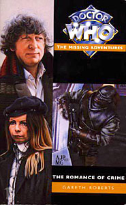

|
The Romance of Crime
|
BASIC PLOT DOCTOR COMPANIONS MATERIALISATION CIRCUIT Pg 195 Above a mining centre on Planet Eleven in the Uva Beta Uva System. Pg 204 Another mining centre on Planet Eleven. Pg 242 Above Planet Eleven again. Pg 244 Back on the Rock of Judgement. PREPARATORY READING CONTINUITY REFERENCES "They brought with them idealistic visions of escape from life on Earth, which was becoming grubbier and more crowded." This is consistent with a lot of the Earth colony stuff in the Pertwee era, especially Colony in Space and, even more so, the Malcolm Hulke novelisation of same, Doctor Who and the Doomsday Weapon. "The council of settlers plumped eventually, with a pitiful lack of originality, for New Earth." Presumably Russell T Davies hadn't read this when he named a place and an episode New Earth. Roberts must have been laughing quite hard at this point. Pg 9 High Archon Pyerpoint appears. The Archon was a ruler in The Pit, a race in a second Doctor Who short story called The Nameless City and a Celestis construct in The Taking of Planet 5. None of these are actually relevant here. Pg 16 "Great green ambassadors almost flattening me in their enthusiasm." The Creature from the Pit, after which this adventure is set. Pg 17 "The centre column, upon which the Doctor's hat was currently resting, wheezed to a halt." David Banks, as Jon Pertwee's understudy in the stage play, The Ultimate Adventure, apparently did this in his abortive incarnation. "The Randomizer, linked up to the TARDIS navigation controls by the Doctor in an effort to safeguard his location from the vengeful Black Guardian, had activated." The Armageddon Factor. Pg 18 "She dug into the pocket of her jacket and produced the Doctor's yo-yo." The Doctor used a yo-yo to test the local gravity a number of times (The Ark in Space et al). Pg 19 "'I don't want to hear you say I told you so, K9' [...] 'Instruction noted, Master. This unit will never say "I told you so." Linguistic sequence erased from phraseology bank." This is very similar to K9 erasing all mentions of tennis from his data banks in The Stones of Blood. Pg 20 "It's duralinium, so this is possibly an Earth colony." Indeed, it's been seen in Colony in Space and The Monster of Peladon. Pg 48 Another reference to the Black Guardian. Pg 60 "'Prydon Academy,' she told him." First mentioned in The Deadly Assassin and ad nauseam since then. Pg 61 "Why can't you paint nice things, like sunflowers?" Probably not a predictory reference to Vincent and the Doctor. Pg 81 "No sign of any ginger beer" The Android Invasion. Pg 87 The Doctor to K9: "No, you never do know the answer when it's something important, do you?" This is a reference to quite a famous out-take tape from The Armageddon Factor, where the actual line uttered by Tom Baker is "You never fucking know when it's important, do you?" Strangely, Roberts decided to alter it for this iteration. Pg 99 The chapter title is "The Ogrons Invade". No, it's not a reference, but it is a very bizarre chapter, building up the mystery as to who the monsters might be having a) rather given the game away in the chapter title, b) having them on the front cover but c) the back cover wondering who the recurring enemies could be. This might be an obscure reference to Episode 1 of Planet of the Daleks, which does something similar. Pg 100 "How wonderful is Death, Death and his brother Sleep." The Doctor quotes Queen Mab, by Shelley, thus predicting his costume as the eighth Doctor. Fine. Please yourself. Pg 113 The location of the Ogrons' quarters was made plain by the foul odour of animal excreta mixed with the heady fumes of Rigellian ale." Rigel has been mentioned loads of times, in comics, books and audios, mostly written after this one, however. Bookwise, it's mentioned in Byzantium! and Players. Pg 126 The chapter title is "The Plotters", which is a Missing Adventure that Gareth Roberts hadn't written yet (The Plotters). Pg 129 "We purchased the Ogrons for a competitive price from the auctions on Ghelluris. Their previous owners had run into a spot of bother - they were planning to invade the galaxy but some bloke blew half of them sky high - and they had to sell up." Frontier in Space (and the idea of the Daleks trying to make a quick sale at an auction is hilarious). Pg 151 "I meant, that although I may not be suited to yomping up endless corridors and stairs, there are certain physical activities that I consider myself to excel in." John Nathan-Turner was very into yomping (look it up). The rest of that statement, we'll leave, shall we? "Her respiratory bypass would save her from the effects of the gas" Pyramids of Mars. Pg 129 "We purchased the Ogrons for a competitive price from the auctions on Ghelluris. Their previous owners had run into a spot of bother - they were planning to invade the galaxy but some bloke blew half of them sky high - and they had to sell up." Frontier in Space. Pg 192 "Perhaps, thought Stokes, slippery hands twisting, there was something on this planet. A dark, ancient force more powerful than death itself." Not the case in this book, but the plot of a good half of the NAs. Pg 199 "It's just as well, Romana, that the people who try to kill me are all such bad shots." Just about every Doctor Who story ever. Pg 213 "K9 spoke. 'Sensors indicate presence of the Mistress. However, her psychospoor trail is obscured by a rogue trace.'" K9 followed psychospoor in The Horns and Nimon and probably lots of others. Pg 231 "If they only knew it was a simple matter of cross-hatching the pentalion drive with the guidance assemblers." Mentioned in Revenge of the Cybermen and, later, Cold Fusion. Pg 232 "Oh, that this too too solid flesh would melt." Hamlet. By William Shakespeare. Pg 234 "[The TARDIS] contains a field that nullifies all hostile action." A perhaps overgenerous description of the field of temporal grace, first mentioned in The Hand of Fear. Pg 243 "Planet Eleven lay below them, its entirety revealed by the scanner's powerful image translator." Mentioned (and useless) in Full Circle. OLD FRIENDS AND OLD ENEMIES NEW FRIENDS AND NEW ENEMIES Detective Inspector Frank Spiggot, of Planet Five police. The Ogrons who are named (and most of those who aren't) all end up dead, but I mention them here, because they seem mostly to be variations on the name of Icelandic singer-songwriter Bjork, who was famous when this book was being written. The named ones are called Gjork, Bnorg and Flarrk.
CONTINUITY COCK-UPS PLUGGING THE HOLES [Fan-wank theorizing of how to fix continuity cock-ups] FEATURED ALIEN RACES Pg 83 Mutants, called Ceerads, which isn't actually an acronym for Cellular Remission And Decay, but you can see what he was going for. They frequently had amazing powers, which makes it all the more bizarre that they were hunted and killed rather than used by the military. You can tell that this isn't an NA. FEATURED LOCATIONS Pg 1/181 The McConnochie Mining Base on Planet Eleven (both now and, in the Prologue, in the previous February). Pg 8 An asteroid that can move about the system known as the Rock of Judgement or Asteroid 6KK Gamma. It starts somewhere between Planets Two and Three but moves around quite a lot thereafter. IN SUMMARY - Anthony Wilson |
|
 |